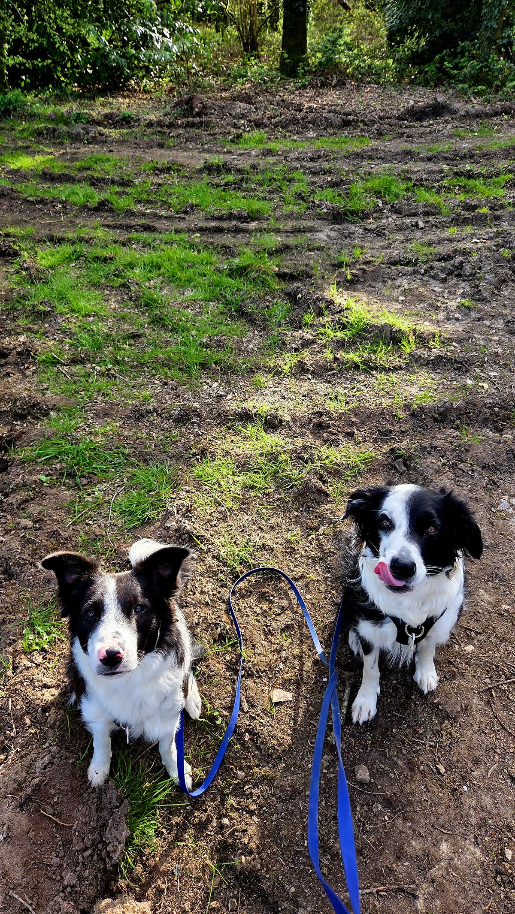
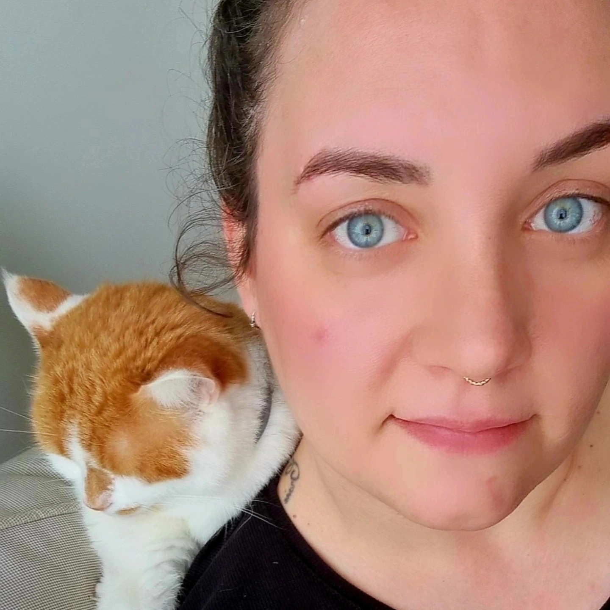
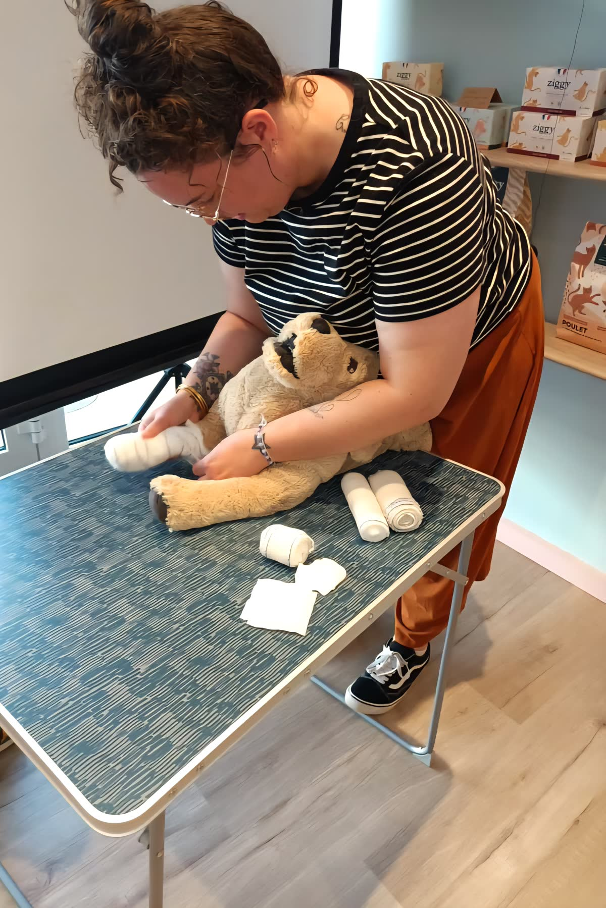

Éthique
Pas de promesses creuses, pas de pression artificielle. Je communique pour vous comme je communiquerais pour moi : avec respect du public, des animaux et de la réalité du métier.
Stratégie, univers visuel et création de contenu pour éducateurs, formateurs et acteurs du bien-être animal. Une communication éthique, humaine et incarnée.


Community manager spécialisée dans le secteur animalier, j'accompagne les professionnels passionnés (éducateurs, formateurs, acteurs du bien-être animal) à structurer leur communication digitale et à développer une présence cohérente et engageante.
Ma particularité ? Une double approche. En parallèle de mon métier, je suis Responsable pédagogique au sein d'Animal University et je continue de me former sur le terrain : ACACED, premiers secours canin et félin, éthologie appliquée…
Cette immersion concrète me permet de comprendre vos enjeux réels et de proposer une communication juste, alignée et crédible, loin des recettes génériques.
Trois valeurs qui guident chaque accompagnement, chaque publication, chaque échange.
Pas de promesses creuses, pas de pression artificielle. Je communique pour vous comme je communiquerais pour moi : avec respect du public, des animaux et de la réalité du métier.
Un accompagnement de proximité où votre personnalité, votre histoire et vos contraintes comptent autant que votre activité. Disponible, à l'écoute, sans jargon.
Une communication ancrée dans le terrain. Mon expérience dans le domaine de la formation, de la communication et du bien-être animal nourrit chaque stratégie pour qu'elle reste juste et sincère.
Je ne propose pas uniquement de publier du contenu. Mon accompagnement structure votre communication de A à Z, pour qu'elle soit cohérente, lisible et professionnelle.
Clarifier votre message et poser des fondations solides.
Une identité reconnaissable au premier coup d'œil.
Une présence régulière, sans charge mentale pour vous.
Objectif : créer une communication cohérente, lisible et professionnelle, qui vous ressemble et qui convertit.

Beaucoup de community managers parlent du secteur animalier sans jamais y avoir mis les pieds. Moi, j'y travaille au quotidien.
Cette immersion m'évite les contresens sur les méthodes, les approches éducatives, les règlementations ou la sensibilité du public. Vos contenus sonnent juste, parce qu'ils sont justes.
J'ai contacté Cindy pour développer mon compte Instagram (secteur art/animalier). Elle a réalisé un audit complet avec toutes les stratégies à mettre en place ainsi que des publications à publier. Un travail facile d'accès, clair, tout en répondant à mes questions. Cindy est une personne à l'écoute, passionnée par son travail et par le monde animalier. Une personne digne de confiance. Merci à elle !
Cindy allie la compétence dans le domaine digital (harmonisation et stratégie des réseaux sociaux) à la parfaite connaissance des domaines de l'éducation canine. Elle m'est d'une aide précieuse pour me faire connaître grâce à la communication digitale. De plus, elle exerce sa spécialité avec une très grande pédagogie, ce qui facilite notre relation. Je recommande à 100 %.
Cindy propose un accompagnement de proximité, très humain. Elle s'est intéressée autant à ma personnalité qu'à mon secteur d'activité pour comprendre mes enjeux dans les mois à venir. Elle est ultra disponible et en même temps rigoureuse. Suffisamment pour m'inciter gentiment à avoir de la régularité et un suivi dans ma communication sur les réseaux sociaux.
Chaque accompagnement est personnalisé en fonction de votre besoin, de votre niveau actuel de structuration et de l'univers de votre activité. On commence par un appel pour faire connaissance et clarifier vos objectifs. Ensuite seulement, je vous propose une formule alignée et un tarif juste.
Réserver un échangeVous avez un projet, une question, une envie de structurer enfin votre communication ? Écrivez-moi, je réponds personnellement, généralement sous 48 h.
patteenplume@gmail.comRéponse personnalisée. Pas de bot, pas de copier-coller.